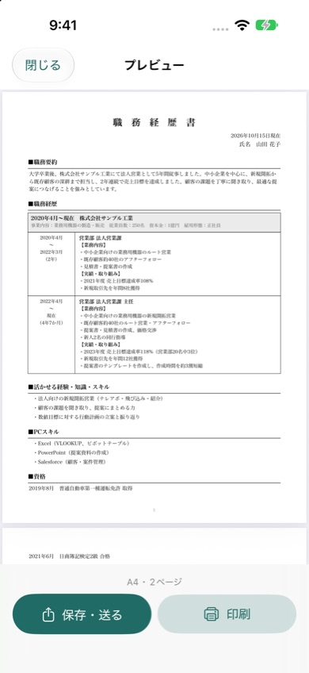
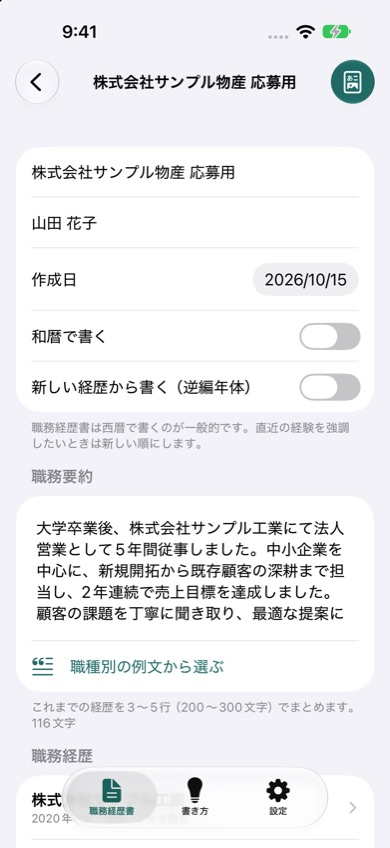

職務経歴書
iPhoneで入力するだけで、見やすいA4の職務経歴書PDFを作れるアプリです。職種別の例文から書き始められ、メールで送ったり印刷したりできます。入力した内容はiPhoneの中だけに保存します。
App Storeで近日公開
iPhone（iOS 17以降）・無料で試せます（透かしなしの出力は買い切り300円）


できること
- 見やすいA4のPDF：職務要約、会社ごとの職務経歴（期間と業務内容・実績の表）、活かせる経験・スキル、PCスキル、資格、自己PR。内容に合わせてページが増えます。
- 職種別の例文：営業・事務・販売接客・ITエンジニア・介護の例文から、職務要約・業務内容・実績・自己PRを書き始められます。
- 在籍期間を自動計算：「4年7か月」のように期間ごとの在籍期間を入れます。
- 編年体・逆編年体：経歴を古い順にも新しい順にも並べられます。和暦・西暦の切り替えも。
- 応募先ごとに複製：自己PRや強調する実績だけ変えた職務経歴書を何通でも作れます。
- 送る・印刷する：PDFをメールやファイルに保存、AirPrintで印刷、コンビニのネットプリントにも。
よくある質問
どんな形式の職務経歴書が作れますか
職務要約、会社ごとの職務経歴（期間と業務内容・実績の表）、活かせる経験・スキル、PCスキル、資格、自己PRを並べたA4の職務経歴書です。内容の量に合わせてページが増えます。
何を書けばいいかわかりません
営業・事務・販売接客・ITエンジニア・介護の例文から書き始められます。数字や固有名詞を自分の経験に合わせて書き換えてください。「書き方」タブにポイントもまとめています。
無料で使えますか
入力とプレビューは無料です。無料のままでは出力したPDFに「見本」の透かしが入ります。買い切り（300円）で、何通でも透かしなしで出力できます。機種変更後は「設定」の「購入を復元」を押してください。
お問い合わせ
メール: tanacount.support@gmail.com
返信までお時間をいただく場合があります。
ほかのアプリ
履歴書：iPhoneで書いて、様式どおりのA4のPDFに。学歴の年を自動入力
証明写真：背景を消して規格サイズに。L判に並べてコンビニで印刷